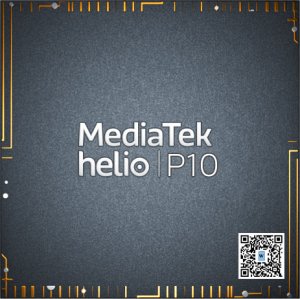

MediaTek Helio P10 (MT6755)
Jump to navigation
Jump to search
|  | |
| Manufacturer | MediaTek |
|---|---|
| Name | Helio P10/P15/P18 |
| Codenames | mt6755/mt6750/m/t/s |
| Architecture | aarch64 |
| CPU | 4x 2.0 GHz Cortex-A53, 4x 1.2 GHz Cortex-A53 |
| GPU | ARM Mali-T860 @ 700 MHz |
| Year | 2014 |
| Process | 28nm |
| Mainline | yes |
| Community Page | https://gitlab.com/mtk-mainline/mt6755/linux |
| Components | |
| CPU |
Partial
|
| UART |
Partial
|
| Storage |
Broken
|
| USB |
Broken
|
| Display |
Partial
|
| GPU |
Broken
|
| Pinctrl |
Broken
|
| I²C |
Broken
|
| SPI |
Broken
|
| Audio |
Broken
|
| Video |
Broken
|
| Thermal |
Broken
|
| WiFi |
Broken
|
| Bluetooth |
Broken
|
| Modem |
Broken
|
| GPS |
Broken
|
| Camera |
Broken
|
| Suspend |
Broken
|
{kind=link}
MT6755 (or Helio P10) is a low-end MediaTek SoC released in 2014 and used in many cheap devices.
Devices
Helio P10 (MT6755)
| Device | Codename | Mainline |
|---|---|---|
| Sony Mobile Xperia XA | sony-tuba | N |
| Sony Mobile Xperia XA Ultra | sony-ukulele |
Helio P15 (MT6750)
| Device | Codename | Mainline |
|---|---|---|
| HMD Global Nokia 3.1 | nokia-ES2 | Y |
Mainline fork
There is a mainline kernel fork on GitLab where development is currently active.
Most information for MediaTek Helio P23 (MT6763) is also applicable here, most of that should be consolidated to a generic MediaTek mainlining page...